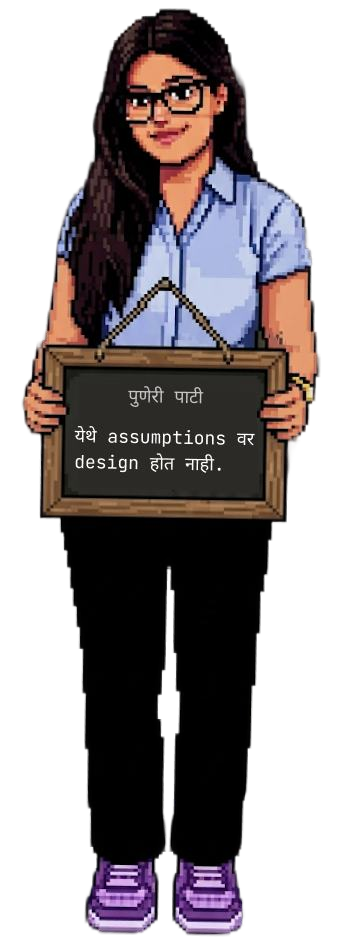
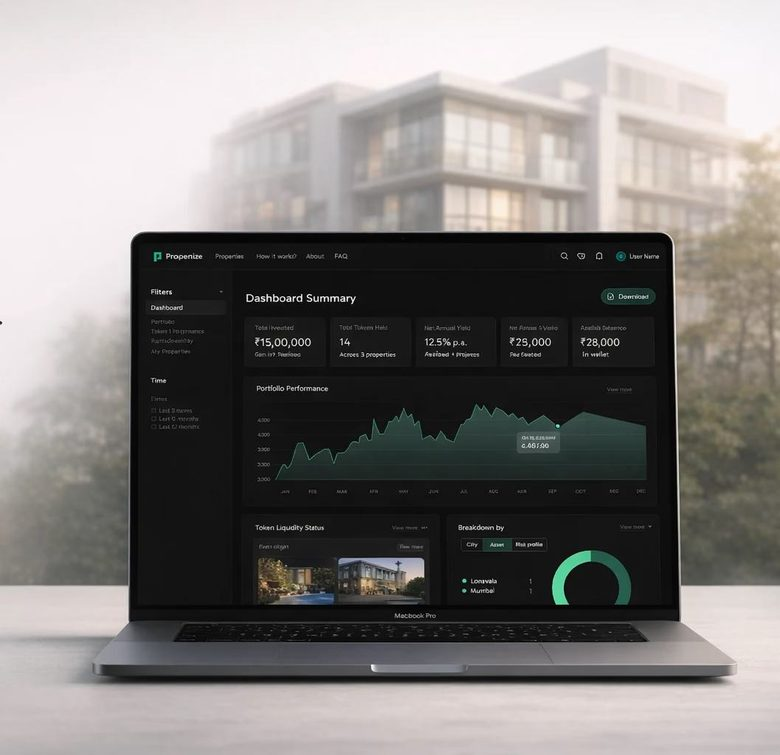
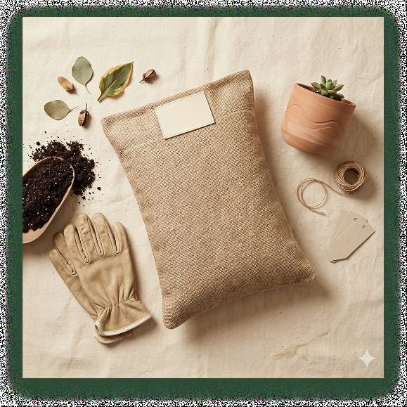
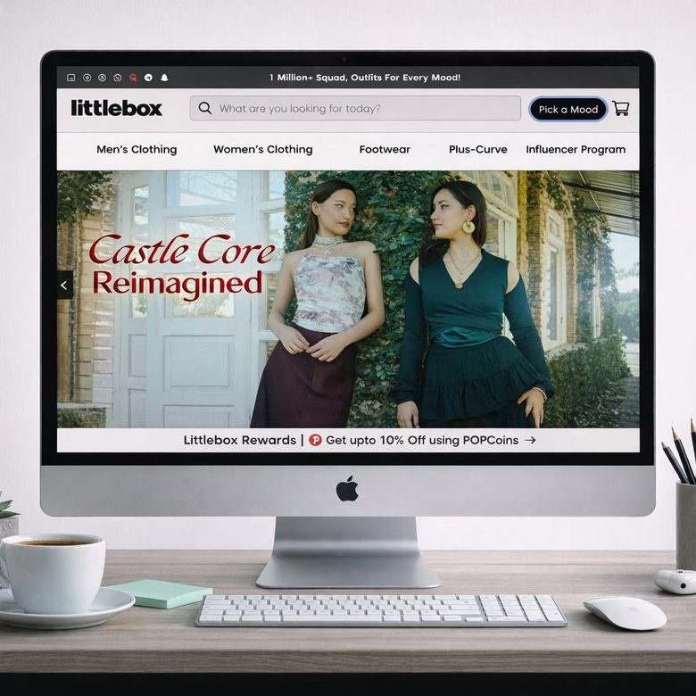
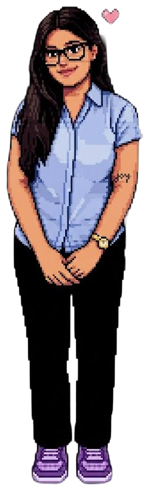
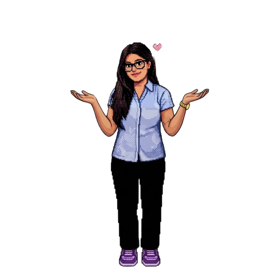

// idle: bob 3s ease-in-out ∞
I like understanding how things work before I try to improve them, that's shaped how I design. Across fintech, an early-stage startup, and academic research, I've learned to work with ambiguity: shifting briefs, unfamiliar domains, half-formed problems. The part I care about most is making something that's genuinely hard to build feel simple to use.
— designed + built with curiosity

Designed the onboarding-to-checkout flow for a blockchain real estate investment platform, KYC, investment browsing, and cart, condensed into four steps that got 98% of users through verification instead of dropping off.
UX Designer · 98% KYC completion · 200 signups · 80 paying customers

Researched a crowded plant-care market through competitor analysis, then designed an end-to-end e-commerce site, for a sustainable moisture-retention product built to cut watering by 50%.
UX Designer · 5 competitors analyzed · 3 personas · 8-page site

Led a redesign of an e-commerce site's usability, backed by heuristic evaluation, SUS scoring, NASA TLX, and eye-tracking, not just instinct, as part of a 4-person team.
UX Designer · SUS + NASA TLX scoring · Eye-tracking · Cognitive walkthrough

// case_studies_section

"Jagruti hadn't worked in fintech before this, but she picked up the domain fast and delivered exactly what we were looking for. She's reliable and takes ownership of her work. Good instincts, even in unfamiliar territory."
"Throughout the internship, her contribution was valuable, and she also showed great communication skills, while presenting to the customers. Apart from creative thinking, she showed good understanding of the customer business."
"During this period, she was actively involved in post-project reports and related work for the NGO, with the objective of enhancing transparency. She demonstrated commendable dedication, responsibility, and skill throughout her internship."